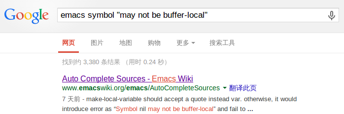

Symbol t may not be buffer-local问题
真是快要疯掉了……本来只是想配置好python的开发环境的，然后动了整理配置文件的念头，整理的时候更新了一些插件，结果插件和旧版本org-mode是冲突的，安装上新版本org-mode吧，因为emacs总会加载 \/usr\/share\/emacs\/24.2\/lisp\/ 以及其他几个相关目录下的一些文件，而这些文件和org-mode有关的一部分又是按照旧版本来的，新旧版本一直冲突。一怒之下把这些文件全删了自己编译安装，但是编译安装的依然报错……
当时真是要疯掉了……
算了，说正事。
后来我在ubuntu系统里把对应的目录复制过来用来进行恢复，总算才好了。但是，当我尝试进行publish的时候，就……
一直一直一直一直一直一直报这个错误：
Symbol t may not be buffer-local
*Message*里只有这一条信息，没有出错位置，没有任何其他信息。Google了八百遍也找不到相关的issue，当时真的是把这个Linux Mint系统格了重装的心都有了……
后来发现自己的搜索有点问题，我是直接把这条出错信息贴在搜索框里的，而这样Google是会把这句话拆分成多个关键字来进行搜索的，而不是用这整句话！尝试用双引号括起来后终于得到了一条稍微有点参考价值的结果: 
这条信息向我指示了可能的出错位置:
make-local-variable should accept a quote instead var. otherwise, it would introduce error as “Symbol nil may not be buffer-local” and fail to start ESS.
我的配置文件里有这么一条:
(defun my-lisp-style () (highlight-parentheses-mode t) (hs-minor-mode t) (set (make-local-variable 'electric-pair-mode) nil))
而我漏写了 electric-pair-mode 前面那个单引号。
终于对上了，知道是哪里出了错，感觉真他妈好(偶尔爆个粗口)！